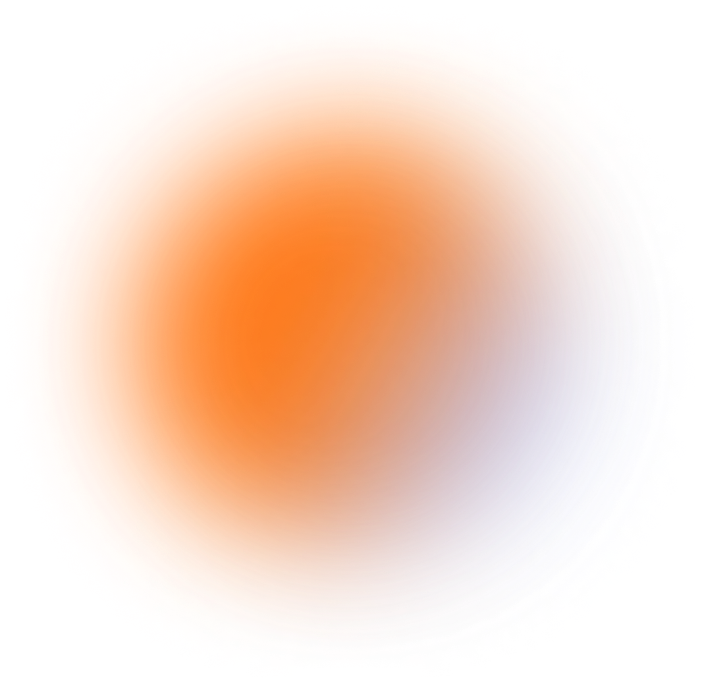

HOME
PROJECT
ABOUT
Hi,
I'm Benjamin
a front-end web developer and visual designer currently
studying Interactive Arts and Technology at SFU

Interface Design
UX|UI, Font-end
team project at 2022
LONG LIVE FASHION
see more
HCI, Interface design
team project at 2022
POKEMONGO CAREFULLY
see more